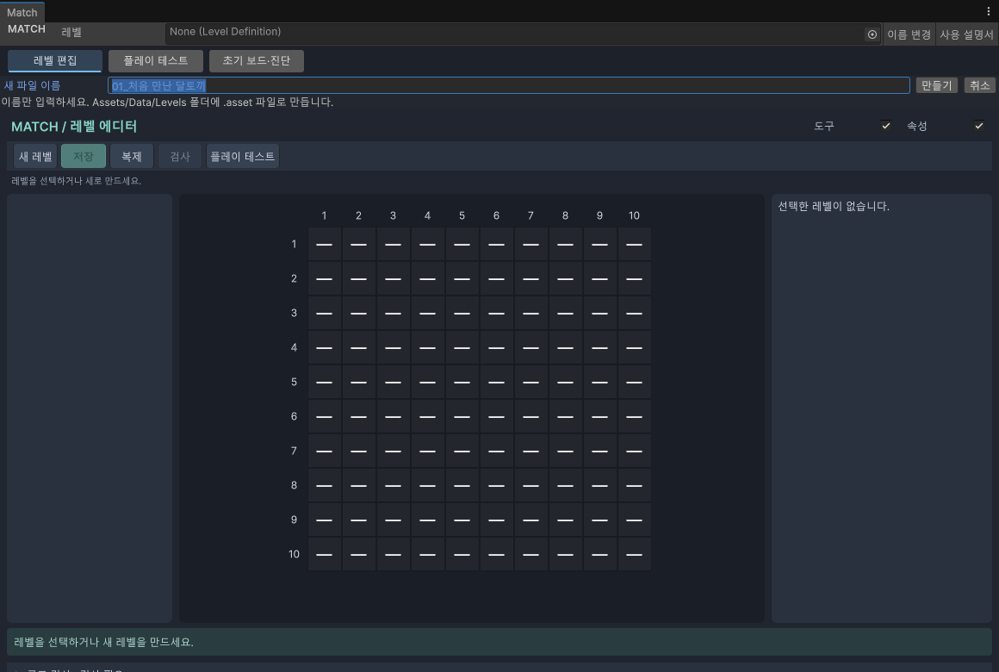
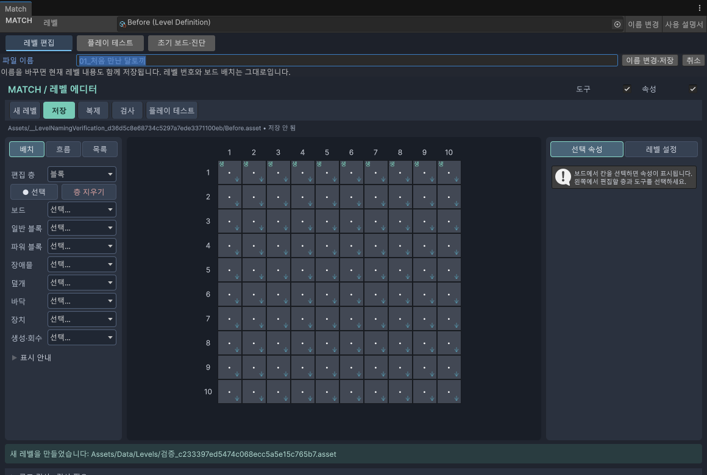

01 · 레벨 관리
파일과 이름
찾기 쉬운 이름으로 레벨을 만들고 관리합니다.
시작 전에 Match 통합 작업창을 엽니다.
새 레벨 만들기
- 레벨 편집 탭에서 새 레벨을 누릅니다.
- 새 파일 이름에
01_처음 만난 달토끼처럼 알아보기 쉬운 이름을 입력합니다. - 만들기를 누릅니다. 맨 위 레벨 선택 칸이 새 파일로 바뀝니다.
Project 창에서 오른쪽 버튼 → Create → 퍼즐 → 레벨 데이터를 골라도 같은 이름 입력 화면을 엽니다. 파일은 Assets/Data/Levels 폴더에 만들어집니다. 끝의 .asset은 자동으로 붙으므로 입력하지 않습니다. 취소를 누르면 파일을 만들지 않습니다.

기존 파일 이름 바꾸기
- 맨 위에서 이름을 바꿀 레벨을 선택합니다.
- 레벨 선택 칸 옆의 이름 변경을 누릅니다.
- 파일 이름을 고치고 이름 변경·저장을 누릅니다.
- Project 창과 맨 위 레벨 선택 칸에서 새 이름을 확인합니다.

이름을 정할 때
| 입력 예 | 결과 |
|---|---|
| 01_처음 만난 달토끼 | 한글·숫자·띄어쓰기 사용 가능 |
| 02_상자 정리 | 번호와 짧은 설명을 함께 쓰면 찾기 쉽습니다. |
| 첫 레벨.asset | .asset을 빼고 입력하세요. |
| 첫/레벨, 레벨:1 | 파일 이름에 사용할 수 없는 기호입니다. |
| 같은 폴더의 기존 파일과 같은 이름 | 기존 파일을 덮어쓰지 않고 안내를 보여줍니다. |
파일 이름의 01과 게임에서 쓰는 레벨 번호는 별개입니다. 실제 번호는 오른쪽 레벨 설정에서 정하세요.
기존 레벨 열기와 저장
추가 · 빠른 저장: 레벨 편집 화면에서 Ctrl+S를 누르면 현재 레벨을 저장합니다. Mac에서는 Cmd+S입니다. 숫자를 입력하던 중에도 입력값을 확정해서 저장합니다. 변경한 내용이 저장되지 않았으면 창 제목에 Match *, 파일 안내에 ● 저장 안 됨이 나타납니다. 저장하면 두 표시가 해제됩니다. 플레이 테스트와 초기 보드 진단 탭에서는 이 편집용 단축키를 처리하지 않습니다.
- 맨 위 레벨 칸에 Project 창의 레벨 파일을 끌어다 놓거나, 오른쪽 선택 버튼으로 찾습니다.
- 내용을 고친 뒤 레벨 편집 → 저장을 누릅니다.
- 아래 안내의 저장됨 표시를 확인합니다.
저장 안 됨은 마지막 저장 이후 바뀐 내용이 있다는 뜻입니다. 플레이 테스트는 아직 저장하지 않은 내용도 읽지만, 원본 파일을 대신 저장하지 않습니다.
비슷한 레벨을 복제하기
- 복제할 레벨을 선택하고 복제를 누릅니다.
- 다른 레벨과 겹치지 않는 새 레벨 번호를 입력합니다.
- 경로 선택·복제를 누르고 저장할 폴더와 새 파일 이름을 정합니다.
- 복제가 끝나면 새 레벨이 선택됩니다.
저장하지 않은 수정도 복사됩니다. 원본은 그대로 남습니다. 파일 이름과 레벨 번호를 함께 확인하세요.
이름 변경이 안 될 때
레벨을 먼저 선택했는지, 같은 폴더에 같은 이름이 있는지 확인하세요. 빈 이름, 끝의 점, / \ : * ? " < > | 같은 기호는 사용할 수 없습니다. Windows에서 쓰지 못하는 CON, COM1 같은 이름도 피하세요.
변경 이력
| 변경일 | 변경 항목 | 이전 → 현재 | 이유 |
|---|---|---|---|
| 2026.09.28 | 저장 단축키와 변경 표시 | 추가 · Ctrl+S, Match *, 저장 안 됨 | 편집 화면에서 빠르게 저장하고 미저장 상태 확인 |
| 2026.09.28 | 모양 목록 | 추천 → 등록형 목록 안내 추가 | 사용자 등록 방식 반영 |
| 2026.09.28 | 맵 모양 추천 안내 | 추가 · 왼쪽 목차에 추천 안내 연결 | 추천과 ! 도움말 사용법 안내 |
| 2026.09.28 | 이 페이지 전체 | 추가 · 처음 작성 | 현재 Match 도구를 쉽게 설명 |
설명 편집일: 2026.09.28 · 대상: Windows / Unity 6000.3.10f1
검증 상태: 메뉴·절차 코드 대조, 실제 화면 캡처. 확인 범위 보기